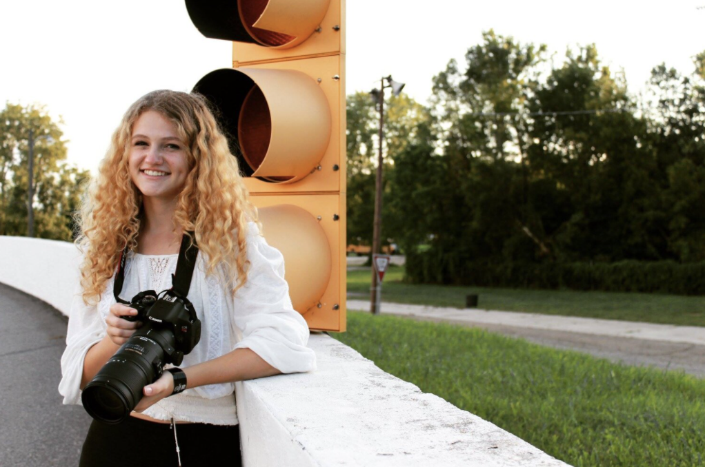

What started in 2015 among my first, DSLR purchase has turned into a small-business supported by over 300 members in my community. Through this service, I shoot university student headshots, graduation ceremonies, senior photos, family portraits, and more. I am so grateful that this business has provided me an outlet to continue photography alongside technology design. This skill has also created many opportunities for me to design and photograph my own artwork for websites as I write the code alongside.

Through Mia Turco Photography, I was also able to design a website as one of my first projects. You can view the site, along with my photography portfolio, HERE.